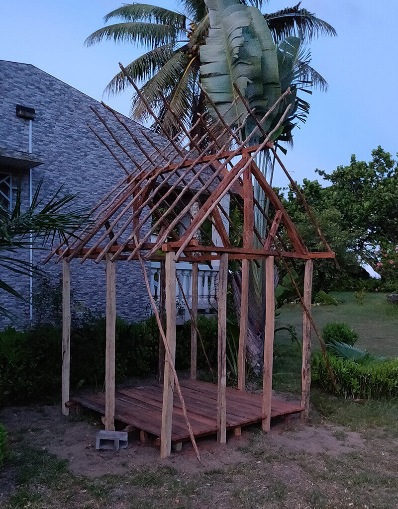

Learning for the uninitiated
The students have been on a rollercoaster ride of learning for the last month. In this post I'll review how well it's gone, and share some insights I learned along the way.
The content
We've covered a lot of ground. Here are just a few of the topics we've been learning about:
- Finish off Basic IT, including Excel, Excel Formulas, and navigating Windows 10.
- Typing properly.
- The basics of Browsers.
- An introduction to The World Wide Web, The Internet, and how to search effectively using Google and DuckDuckGo.
- Setting up personal E-mail using Gmail, and then following that up with Onja e-mail accounts for each of the students.
- Setting up Slack, and importantly, how to post animated GIFs.
- Using Google Drive and collaborating on Google Docs
- Networking, including introductions to the various protocols we use such as TCP, IP, HTTP.
- Markdown, as an introduction to markup languages, and how to document things.
- Command lines with a small foray into PowerShell, and then focusing entirely on Bash.
- Source control using Git, GitHub, and Git Bash for Windows.
- This week, we started on my favourite topic: HTML.
Abstract concepts do not apply without prior knowledge
Some of the topics we've covered have been easy to understand, but where things break down is in abstractions, or analogies applied to concepts that the students have no foundational knowledge of.
Most of our students had never touched a computer before the end of the last year. Imagine trying to understand that when you copy something to an imaginary clipboard [Really? Why would you put anything on a Clipboard?!], that you can then paste it over and over again. Even the words copy and paste are problematic. Our situation is made worse by the student's entry-level proficiency in English. Some words need to be looked up before they can be understood, so as a teacher it's become clear we need to repeat ourselves and rephrase everything we say, at least once.
And this happens at every turn.
Don't forget to indent each child element!
I'd say to the class, encouraging good clean coding conventions.
But my class looked back at me confusedly. One way to fix this would be to write the words I just expressed on the whiteboard, and go through each word's meaning until the class understood.
indent was especially problematic, as we broke the word down, not even dent was understood!
At times I feel like Alice falling, discovering that the knowledge rabbit hole goes very deep before you hit the bed rock. And once you get there, you can start building your ladder to get back up to the top.
Cultural differnces
Comprehension and communication aside, cultural differences can be a tricky hurdle to overcome before knowledge can be exchanged effectively.
Malagasy culture consists of an upbeat or never-show-you-feel-down attitude to life. One should generally be positive, and accept your lot in life with humility. Life will tick along, bad times disappear like storms, giving way to sunny days thereafter.
This attitude exists in the classroom too. Students won't admit that they don't know, nor say that that they're struggling, for fear of breaking their social norms. It's almost like they're afraid of displaying weakness.
So you can imagine this idiot stumbling over these cultural norms, and then later apologising for my insistence on wanting my students to display humility. Thinking back, the students I cornered were exceptionally brave to finally admit they didn't know.
Little episodes like that have happened, and we've all learned from it. Over time our group has felt more cohesive, our pace is improving, and the students are asking more involved questions.
The individual
Each student displays fascinating character traits, they excel in certain skills. Some love the fastidiousness of writing clean code, while others put their time and attention into their writing, or researching a particular topic.
It's been a real challenge to keep the pace of the exercises up, as we can only move as fast as the slowest in the class. Structuring extra work for the faster students has been a worthy pursuit, so that they're not left out in the cold that is boredom.
Communication as the cornerstone
There seems to be a general rule that applies to most of the students, the better their English comprehension, the better they are at learning their work.
For goodness' sake, please don't underestimate the necessity of good communication. The more I think about the prototypical and self-involved developer, the more I think what a terrible burden they've been on collaborative development teams everywhere.